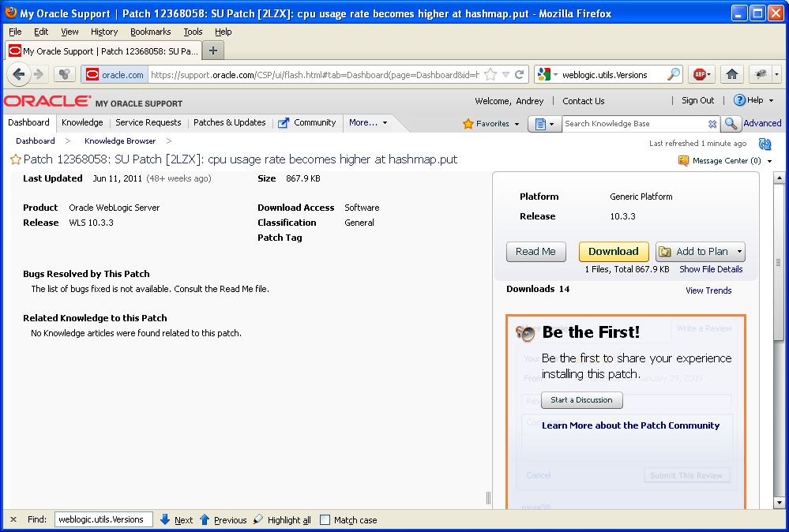
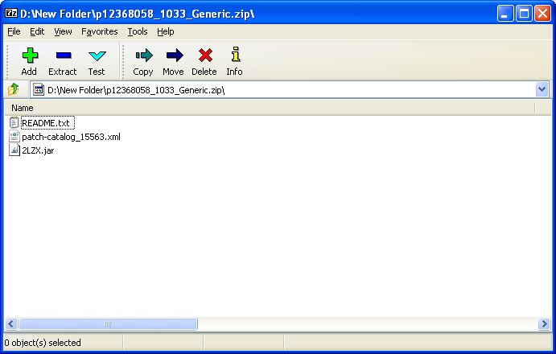
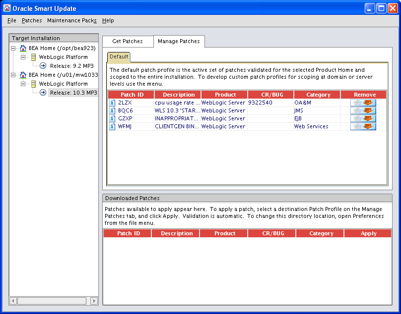

|
Заходи в WEBCHAT админов Oracle Здесь старый добрый IRC |

|
Loading
Работа над этой версией сайта остановлена. Рекомендуется обратиться к новой версии сайта oracle-dba.ru на котором в дальшейшем будут исправляться все ошибки и неточности.
Применение патчей к серверу приложений Oracle WebLogic
WebLogic Server, как и любая программа, имеет ошибки. Для исправления некоторых из таких ошибок Oracle выпускает специальные заплатки – которые могут быть установлены на текущую версию сервера не дожидаясь выхода очередной версии. Распространяются такие патчи через Oracle Support – часть патчей доступна для скачивания всеми подписчиками этого сервиса, а часть делается специально для отдельного клиента. Для работы с такими заплатками в состав дистрибутива WebLogic входит специальная утилита – Oracle Smart Update. Патчи идентифицируются по номеру ошибки, которую они исправляют, а также по версии сервера, для которой они предназначены. Вариант патча для конкретного номера ошибки и версии обозначается четырёхсимвольным буквенно-цифровым кодом. Например, патч с кодом 'HCE9' предназначен для исправления ошибки #8178661 для версии WebLogic Server 9.2MP3 (9.2.3). Важно отметить, что патч всегда привязан к конкретной версии (с точностью до сервис-пака) и не может быть штатно установлен на другую версию – т.е. патч сделанный для версии 10.3 (т.е. фактически 10.3.0) не может быть установлен на версию 10.3.3. Для отдельных ошибок также существуют статьи в Oracle Support, которые описывают данную ошибку.
Определить, какие патчи установлены на сервер WebLogic
Нужно найти в логе сервера (обычном или консольном) строку с версией – она располагается в начале файла. Например, если никаких дополнительных патчей на сервере нет, то эта строчка может выглядит как:или так:
или вот так:
Если же на сервер установлены дополнительные патчи, то версия может выглядеть вот так:
или так:
Как устанавливать патчи с помощью Oracle Smart Update?
Патч для WebLogic Server-а обычно представляет собой zip-архив, внутри которого находится readme-файл, архив с самим фиксом (вида XXXX.jar, например HCE9.jar) и xml-файл, содержащий каталог всех патчей и информацию об их совместимости (информация в каталоге представлена на момент выпуска данного патча). Основной алгоритм применения такой патча следующий – необходимо поместить указанное выше содержимое архива в каталог кэша Oracle Smart Update, затем запустить саму утилиту и в интерактивном режиме применить необходимые патчи. Этот вариант установки мы подробно рассматривать не будем – его можно посмотреть в соответствующей документации: Oracle Smart Update – Applying Patches to Oracle WebLogic Server. Мы же рассмотрим вариант с установкой патча через командную строку:
Идентифицируем каталоги, их имена будут использоваться на следующих шагах:
- MW_HOME – каталог, в котором установлены продукты WebLogic (напимер, '/opt/mw103'). Будем обозначать его как $MW_HOME.
- WL_HOME – каталог, в котором установлена конкретная версия WebLogic Server (например, '/opt/mw103/wlserver103'). Будем обозначать его как $WL_HOME.
Распаковать все необходимые патчи в каталог $MW_HOME/utils/bsu/cache_dir. Если для установки используются приложенные ниже сборные архивы, то их нужно распаковывать в каталог $MW_HOME/utils/bsu. В случае, если в каталог распаковывались индивидуальные патчи, а не представленные ниже сборки, то нужно настроить правильный каталог патчей. Для этого нужно среди всех файлов вида 'patch-catalog_XXXXX.xml' и 'patch-catalog.xml' в каталоге $MW_HOME/utils/bsu/cache_dir выбрать тот, который имеет максимальный размер и переименовать его в patch-catalog.xml. Переходим в каталог $MW_HOME/utils/bsu – из него будут выполняться команды из следующих пунктов.
Для просмотра текущего списка установленных патчей можно выполнить следующую команду:
./bsu.sh -view -prod_dir=$WL_HOME -status=applied
Результат вызова может быть следующим:
ProductName: WebLogic Server
ProductVersion: 10.3 MP3
Components: WebLogic Server/Core Application Server,WebLogic Server/Admi
nistration Console,WebLogic Server/Configuration Wizard and
Upgrade Framework,WebLogic Server/Web 2.0 HTTP Pub-Sub Serve
r,WebLogic Server/WebLogic SCA,WebLogic Server/WebLogic JDBC
Drivers,WebLogic Server/Third Party JDBC Drivers,WebLogic S
erver/WebLogic Server Clients,WebLogic Server/WebLogic Web S
erver Plugins,WebLogic Server/UDDI and Xquery Support,WebLog
ic Server/Workshop Code Completion Support
BEAHome: C:\bea1033
ProductHome: C:\bea1033\wlserver_10.3
PatchSystemDir: C:\bea1033\utils\bsu
PatchDir: C:\bea1033\patch_wls1033
Profile: Default
DownloadDir: C:\bea1033\utils\bsu\cache_dir
JavaVersion: 1.6.0_18
JavaVendor: Sun
Patch ID: WFMJ
Patch ID: 2LZX (9322540)
В данном случае, на сервер установлено два дополнительных патча – WFMJ и 2LZX.
Для просмотра текущего списка доступных к установке патчей можно выполнить следующую команду:
./bsu.sh -view -prod_dir=$WL_HOME -status=downloaded
Результат вызова может быть следующим:
ProductName: WebLogic Server
ProductVersion: 10.3 MP3
Components: WebLogic Server/Core Application Server,WebLogic Server/Admi
nistration Console,WebLogic Server/Configuration Wizard and
Upgrade Framework,WebLogic Server/Web 2.0 HTTP Pub-Sub Serve
r,WebLogic Server/WebLogic SCA,WebLogic Server/WebLogic JDBC
Drivers,WebLogic Server/Third Party JDBC Drivers,WebLogic S
erver/WebLogic Server Clients,WebLogic Server/WebLogic Web S
erver Plugins,WebLogic Server/UDDI and Xquery Support,WebLog
ic Server/Workshop Code Completion Support
BEAHome: C:\bea1033
ProductHome: C:\bea1033\wlserver_10.3
PatchSystemDir: C:\bea1033\utils\bsu
PatchDir: C:\bea1033\patch_wls1033
Profile: Default
DownloadDir: C:\bea1033\utils\bsu\cache_dir
JavaVersion: 1.6.0_18
JavaVendor: Sun
Patch ID: BQC6
Patch ID: GZXP
В данном случае, на сервер можно дополнительно установить ещё два патча – BQC6 и GZXP.
Для установки конкретного патча можно выполнить следующую команду (вместо XXXX необходимо подставить идентификатор конкретного патча): ./bsu.sh -install -prod_dir=$WL_HOME -patchlist=XXXX Например, при установке патча с идентификатором '2LZX' нужно выполнить следующую команду:
./bsu.sh -install -prod_dir=$WL_HOME -patchlist=2LZX
При успешном завершении обновления будет выведена следующая информация:
Checking for conflicts.. No conflict(s) detected Installing Patch ID: 2LZX.. Result: Success
Также может оказаться, что данный патч уже применен – тогда сообщение будет следующим:
Patch already installed: 2LZX in profile: Default
Обратите внимание, что после выполнения этих действий модифицированные jar-файлы будут использоваться ВСЕМИ экземплярами серверов, которые используют данный WL_HOME. В случае, если узлы кластера расположены на разных машинах, то для установки патча описанные действия нужно выполнить на каждой из машин.
Как активировать патчи для конкретного сервера?
Когда Oracle Smart Update устанавливает патч, то он создает специальный jar-файл, который через свой манифест ссылается на все необходимые jar-файлы. Для активации большинства патчей достаточно, чтобы этот jar-файл попал в classpath до обычного weblogic.jar. Это условие автоматически выполняется для всех некластерных конфигураций NC (за генерацию правильного Classpath отвечает скрипт $WL_HOME/common/bin/commEnv.sh), а также для наших административных серверов в кластере. Для узлов же кластера нужно добавить в начало Сlasspath-а ссылку на следующий архив:Для 9.2.3: $MW_HOME/patch_weblogic923/profiles/default/sys_manifest_classpath/weblogic_patch.jar
Для 10.3.3: $MW_HOME/patch_wls1033/profiles/default/sys_manifest_classpath/weblogic_patch.jar
Кроме этого, для активации отдельных патчей может требоваться включить в аргументы запуска сервера дополнительные параметры – эта информация приводится в описании соответствующего патча.
Важно отметить, что шаг с включением указанных выше ссылок в Classpath является обязательным для активации патча на кластерных серверах – если это забыть сделать, то патч не будет применяться.
Узнать, какая версия Weblogic установлена
$ cd /opt/mw1033/wlserver103/server/bin
$ . ./setWLSEnv.sh
$ java weblogic.version
WebLogic Server 10.3.3.0 Fri Apr 9 00:05:28 PDT 2010 1321401
Практический пример применения патчей к weblogic сервер
$ mv p12368058_1033_Generic.zip /u01/mw1033/utils/bsu/cache_dir/ $ cd /u01/mw1033/utils/bsu/cache_dir/ $ unzip p12368058_1033_Generic.zip $ rm p12368058_1033_Generic.zip $ mv patch-catalog_15563.xml patch-catalog.xml cd /opt/mw1033/utils/bsu export DISPLAY=ip:0.0 ./bsu.sh


